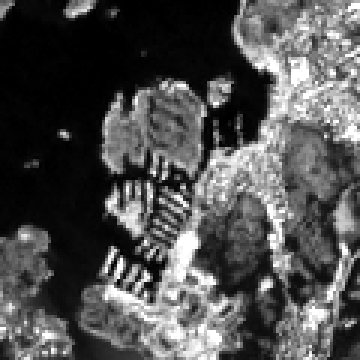
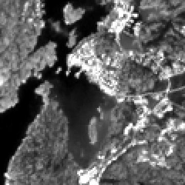
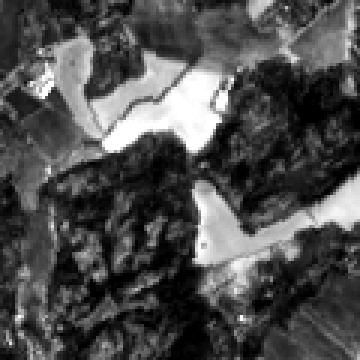

Modellen tränar på fyra Sentinel-2-ramar per tile (1 höstram från år−1 + 3 växtsäsongsramar). För Prithvi-backbonens temporala stack måste varje pixels tidsserie vara samma markpunkt genom alla fyra ramar — annars lär sig modellen brus istället för fenologi. Den här sidan visar hur den justeringen görs, och varför mutual information slår phase correlation när ramarna spänner över årstider.
Varför ramarna måste vara pixel-justerade
En multitemporal tile är en stack (4×6 + 11, H, W) där de fyra
spektralramarna ska representera samma 10 m-ruta sedd vid fyra tidpunkter.
Backbone:n läser varje pixels tidsserie som en sekvens. Om ram 2 ligger en
knapp pixel fel mot ram 0 blandas en åkerkant ihop med dikesrenen bredvid —
den temporala signalen blir geometriskt brus i stället för fenologi. Målet är
att alla fyra ramar är sub-pixel-justerade mot varandra.
Ramar per tile
Inter-frame-residual (rå M1)
Efter MI (M2)
MI vs phase corr
Pipelinen i tre steg
Justeringen sker i tre väl avgränsade steg. M1 är deterministisk och appliceras alltid; M2 är prioriteten och fokus för den här sidan; M3 är sekundär och nedprioriterad.
M1 Grid-snap
Varje rams transform snäpps till det svenska nationella NMD 10 m-gittret, så att output-tiles alltid landar på det nationella rutnätet — etiketter och aux-kanaler co-lokaliseras automatiskt. Det här flyttar aldrig något: det är transform-baserat, inte estimerat.
M2 Inter-frame-koregistrering
De fyra ramarna registreras mot varandra (mot en vald referensram) så att de ligger sub-pixel-justerade. Det är här den temporala stacken faktiskt blir användbar för backbone:n — och det är det som kostar mest att få rätt när ramarna ser olika ut mellan årstider.
M3 Absolut-mot-NMD
En liten residual-offset för hela stacken mot NMD. Nedprioriterad, eftersom en liten helstacks-offset är ett mycket mildare fel än att ramarna är förskjutna inbördes — en samlad förskjutning bevarar tidsserien pixel för pixel.
Nyckelfyndet — mutual information, inte phase correlation
Ramarna spänner över årstider: höststubb i ram 0, sommarkronor i växtsäsongsramarna. Samma markpunkt ser därför radiometriskt olika ut mellan ramarna. Det bryter den klassiska metoden.
Phase correlation jagar utseendet, inte geometrin
Phase correlation (korskorrelation i frekvensdomänen) antar att de två bilderna är samma scen, bara förskjuten. När innehållet ändras mellan årstider låser den på det skenbara mönstret i stället för den sanna geometriska förskjutningen: ~0.75 px fel även på en ren, samma-innehåll strukturerad bild, och på de verkliga dry-run-ramarna försämrade den aktivt justeringen — ramarna hamnade 1–1.8 px fel, ibland sämre än att inte göra något alls.
Mutual information scorar statistiskt beroende
Mutual information mäter det statistiska beroendet i de två ramarnas gemensamma histogram. Den bryr sig inte om att en yta är ljus i en ram och mörk i en annan — bara om förskjutningen som maximerar samvariationen. Därför återfinner den den sanna geometriska förskjutningen oavsett utseendeändringen: ~0.05 px på en syntetisk årstidsväxlings-fixture.
Implementation: imint.coregistration.estimate_mi_offset —
mutual information maximeras över en kontinuerlig sub-pixel-förskjutning (Powell),
och förskjutningen appliceras med Fourier-baserad subpixel_shift.
Referensband B04.
Verkligt resultat — 5-tile dry-run
Noll-PU-reprocess av redan cachade ramar (ingen ny fetch). Inter-frame-residualen gick från 0.34 px (rå M1) till 0.01 px (efter MI), snittat över alla 15 ramar. Per ram, före → efter (px):
| Tile | Ram 1 | Ram 2 | Ram 3 |
|---|---|---|---|
43983928 | 0.53 → 0.02 | 0.79 → 0.00 | 0.68 → 0.00 |
44003936 | 0.39 → 0.00 | 0.21 → 0.00 | 0.38 → 0.03 |
44023928 | 0.07 → 0.00 | 0.06 → 0.06 | 0.13 → 0.00 |
44063896 | 0.21 → 0.00 | 0.77 → 0.02 | 0.06 → 0.00 |
44123932 | 0.28 → 0.00 | 0.27 → 0.00 | 0.20 → 0.00 |
Residualen mäts som inter-frame-offset mot referensramen. Ram 0 (höstramen) är referens där den används som ankare; siffrorna ovan är de tre övriga ramarna per tile.
Före / efter — flicker-GIF:ar
Varje par växlar mellan referensramen och målramen (band B04). I FÖRE hoppar kanterna mellan de två ramarna; i EFTER låser de. Tre representativa ramar:



Källa: showcase/coreg/ (B04, 5-tile dry-run, noll-PU-reprocess av
rå M1-ramar). Producerad av k8s/regrid-mi-validate-pod.yaml.